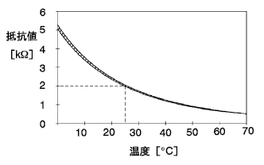
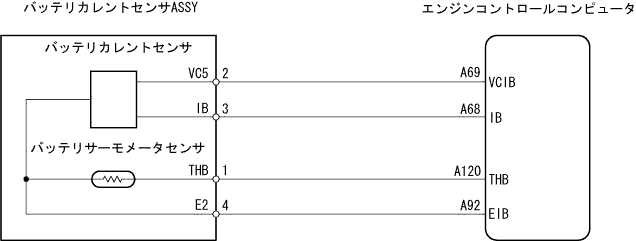
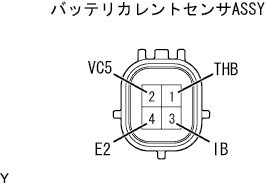
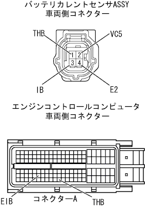

DTC P0516/A7 Battery Temperature Sensor (Low) |
DTC P0517/A7 Battery Temperature Sensor (High) |

| DTC No. SAE/TCCS | DTC Detection Condition 1. Diagnosis Condition 2. Malfunction Status 3. Malfunction Duration 4. Other | Inspection Area |
|---|---|---|
| P0516/A7 |
|
|
| P0517/A7 |
|
|

| Step 1 | Inspect Battery Current Sensor Assembly |
 |
Disconnect the battery current sensor assembly connector.
Using SST (Toyota electrical tester), measure the resistance between the terminals of the connector.
| Tester Connection (Terminal Name) | Condition | Standard |
|---|---|---|
| 1(THB) - 4(E2) | 20 to 30°C | 1.5 to 2.5kΩ |
|
| ||||
| OK | |
| Step 2 | Inspect Wire Harness and Connector (Engine Control Computer - Battery Current Sensor Assembly) |
Reference |
Disconnect the battery current sensor assembly connector and the engine control computer connector A.
Using SST (Toyota electrical tester), measure the resistance between the terminals of the engine control computer and the battery current sensor assembly vehicle side connectors. (For Terminals of ECU, see)
| Tester Connection (Terminal Name) | Condition | Standard |
|---|---|---|
| A120(THB) - 1(THB) | Always | Below 1 Ω |
| A92(EIB) - 4(E2) | Always | Below 1 Ω |
| A120 (THB) and 1 (THB) - Body ground | Always | 10k Ω or higher |
| A92 (EIB) and 4 (E2) - Body ground | Always | 10k Ω or higher |
|
| ||||
| OK | ||
| ||